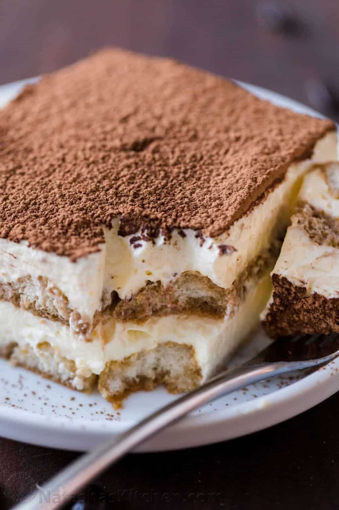

Tiramisu

Description
Tiramisu is a classic Italian no-bake dessert made
with layers of coffee-soaked ladyfingers and incredible
mascarpone cream. The custard-like cream is excellent and
contains no raw egg. This easy recipe is truly the
best homemade tiramisu and always gets rave reviews.
Classic Tiramisu is probably the most iconic Italian treat and
this one does not disappoint!
Ingredients
- 40 ladyfingers
- 16 oz mascarpone
- 4 egg yolks
- 1 1/2 cups espresso
- 6 Tbsp golden rum
- 3/4 cup granulated sugar
- 2 cups heavy whipping cream
- 2-3 Tbsp unsweetened cocoa powder
Preparation
- Quickly dip half of the ladyfingers in coffee syrup and arrange in a 9 by 13 casserole
- Combine 6 yolks and 3/4 cup sugar and continue whisking over a saucepan of simmering water for 9-10 minutes. Remove from steam and whisk for a few minutes to help it cool cool.
- Beat 16 oz mascarpone with 3 Tbsp rum then beat in the cooled yolk mixture until blended.
- Whip 2 cups cold heavy cream to stiff peaks. With a spatula, fold half into the mascarpone mixture then fold in the remaining half until blended.
- Spread half of the cream over the first layer of ladyfingers. Dip the remaining ladyfingers and arrange over the cream. Spread on remaining cream. Cover and refrigerate overnight then dust with cocoa powder and serve.
- Enjoy!